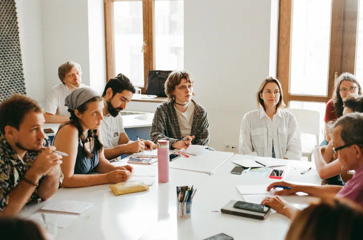
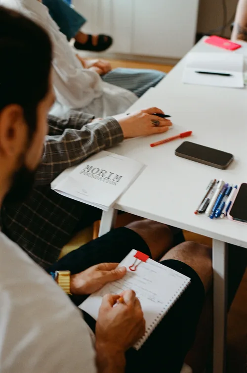

один хороший учитель может повлиять на сотни детей, но...
Перетащите иконку, чтобы переместить её. Щёлкните по ней или нажмите Enter, чтобы убрать её и показать следующую.
сегодня дети растут в мире, где целая индустрия зарабатывает на их внимании. А ещё — войны, ковид, уроки в Zoom.
Школа не была рассчитана на всё это. Фонд помогает учителям работать в таких условиях.


Наш первый пилот в Тбилиси, Грузия. Июль 2026
Фонд проводит программы для учителей и координаторов — с менторами и стипендией для участников.Да, ежемесячная стипендия
Больше половины каждой программы — практика. Сначала — интенсив. Затем учителя ведут занятия с детьми, а координаторы вместе разбирают ситуации из своих школ. Ментор работает с группой на протяжении всей программы.
Мы работаем с хорошо изученными подходами, которым доверяем: исследовательским и деятельностным обучением, проектной работой. Мы не пришли продавать новую педагогику.
Проверка простая: работает ли это в обычном классе из 35 детей во вторник утром?
Последние годы привычный школьный ритм то и дело нарушался. Вы лучше всех видите последствия. Мы хотим дать вам время учиться, пробовать новое и вместе с ментором разбирать то, что происходит в классе.
Начинаем с учителей старших классов начальной школы и первых классов средней — в этом возрасте у многих детей начинает пропадать интерес к учёбе.
Конкретные педагогические практики
На интенсивах разбираем методы по шагам, пробуем их и смотрим, что получается.
«как привлечь внимание класса, не повышая голоса?»«как развивать мотивацию, которая не зависит от оценок?»«как начать урок с настоящего вопроса?»«как помочь детям самим искать ответы, а не угадывать, что хочет услышать учитель?»
Практика с детьми
После интенсива вы несколько недель ведёте занятия с детьми и каждую неделю разбираете свои уроки с ментором. Задача — научиться применять эти методы в своём классе.
Стипендия за участие
У вас и без нас хватает работы. Поэтому мы платим стипендию и за обучение, и за практику с детьми. Если мы ценим время учителя, логично за него платить.
8,8→9,5средняя оценка готовности рекомендовать программу: после интенсива → после практики
40→81%ответов «понимаю и могу применять» на вопросы об основах метода
60→25%опрошенных учителей говорили, что боятся менять ход урока, если он идёт не по плану
Наш первый интенсив в Тбилиси был посвящён исследовательскому обучению. Мы дважды опросили одних и тех же учителей: после интенсива и после нескольких недель практики с детьми и еженедельных встреч с ментором.
После практики ответы заметно изменились. На вопросы об основах метода — зачем нужен исследовательский урок, чем он отличается от просто интересного и какова роль учителя — участники чаще отвечали: «понимаю и могу применять». Доля таких ответов выросла с 40% до 81%. Учителя также реже говорили, что боятся менять ход урока, если он идёт не по плану.
«Стала заметно меньше наводить на правильный ответ, а обращать внимание на ход рассуждения».
Одна из учительниц · именно таких изменений мы ждём
Не всё стало легче. Работа с групповой динамикой по-прежнему даётся трудно. Поэтому добавляем больше практики и разборов с ментором на эту тему.
Три четверти опрошенных детей сказали, что хотели бы таких уроков и в своей школе.
Результаты обнадёживают, но группа была небольшой, а условия — необычно благоприятными. Ещё предстоит проверить, получатся ли похожие результаты в обычных классах.
Сильным учителям нужны школы, в которых можно хорошо работать и хочется оставаться. Поэтому мы помогаем учителям и в классе, и в работе с командой.
Первую программу для координаторов мы делаем вместе с самими раказим. Пилот уже идёт в закрытой группе.
Руководить без формальных полномочий
Раказим тоже учителя. Они ведут уроки и помогают команде работать лучше — хотя коллеги часто им не подчиняются. Как руководить командой в таких условиях?
Обратная связь, которая действительно помогает
Как давать полезную обратную связь, поддерживать коллег и помогать им развиваться? Участники разбирают ситуации из своих школ вместе с ментором.
Время на преподавание и развитие
Как распределять нагрузку и находить время на профессиональное развитие — своё и коллег? Разбираем, как планировать работу, выстраивать команду, налаживать повседневные процессы и вести проекты — так, чтобы работа координатора не отнимала время у преподавания.
Хотите запустить нашу программу в своей школе или муниципалитете?
Расскажите о своей школе и о том, что вам нужно. Мы ищем участников и площадки для практики, а не только финансирование.
Давайте поговорим
Кто делает Morim
Мы много лет работаем в образовании. Теперь вместе создаём Morim.
Ранее — генеральный директор Gradarius, до этого — технический директор и руководитель направления «Информатика» в Яндекс Образовании. Более 13 лет опыта в образовательных технологиях в США и СНГ.
Команда
Мы объединяем специалистов по профессиональному развитию учителей и практикующих педагогов. А ещё собираем круг опытных израильских педагогов и исследователей, которые скажут нам, когда мы ошибаемся, и помогут понять школьную систему изнутри.
Вопросы
Для кого Morim Fellows?
›
Сейчас программа рассчитана на учителей старших классов начальной школы и первых классов средней. Если вы работаете с детьми другого возраста, всё равно напишите нам и расскажите о своём опыте.
А что с ИИ?
›
Мы учим учителей пользоваться ИИ и учить этому детей — а не обучаем ИИ заменять учителей.
Как устроено обучение?
›
Теоретические занятия и воркшопы чередуются с практикой. Учителя работают с детьми, координаторы разбирают ситуации из своих школ. Все участники каждую неделю встречаются с ментором в небольших группах.
Участники получают стипендию?
›
Да. Стипендия предусмотрена и для учителей, и для координаторов. Размер и условия выплат сообщим в описании каждой программы.
Может ли школа или муниципалитет работать с Morim?
›
Да. Нам интересно работать со школами, сетями школ и муниципалитетами, которые хотят запустить наши программы для своих учителей или координаторов. Мы также ищем опытных педагогов, которые помогут нам создавать программы.